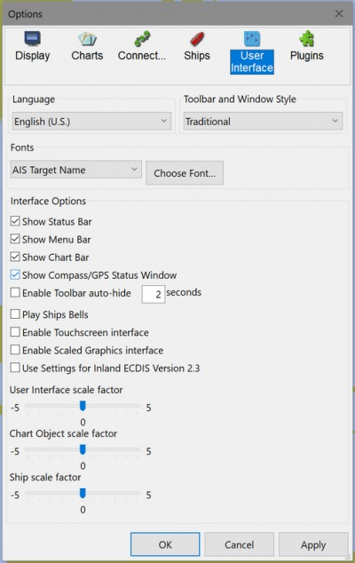
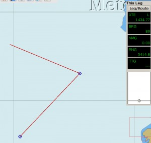
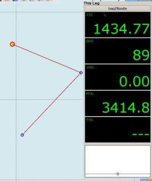
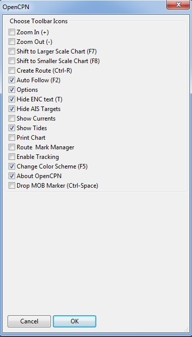
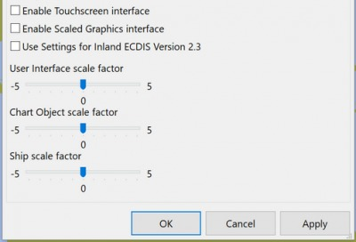

The User Interface

Languages:
The following languages are available in OpenCPN:
- Brazilian Portuguese
- Catalan
- Chinese
- Traditional
- Czech
- Danish
- Dutch
- English
- Estonian
- Finnish
- French
- Galician
- German
- Greek
- Hungarian
- Italian
- Norwegian Bokmaal
- Polish
- Portuguese
- Russian
- Spanish
- Swedish
- Turkish
Choose your language here. Make sure your selected language has the support files installed on your computer (Linux). Default language is US English.
Remark: Changing the language will reset the font settings.
Toolbar and Window Style Menubar. The alternatives are described in Toolbar Buttons and Windows/Mac style MenuBar
Fonts
On a new installation OpenCPN uses the operating system's default fonts. This can be changed to suit the user through this dialog. Fonts can be selected for many elements on the display. Selecting the right size of font can have a dramatic impact on how values are presented. It's well worth playing around with these settings if you think that something is difficult to read for example. Note that even the text displayed on vector charts can be adjusted.
Pick from the Dropdown List
- AIS Target Name - Target List font size
- AIS target List uses the “Dialog” font key.
- AISRollover - Yellow rollover font size
- AISTargetAlert - Popup alert font size
- AISTargetQuery -Query Popup
- ChartTexts -
- Console Legend - Active Route Console XTE, Bearing, etc (upper right black box, see below)
- Console Value - Active Route Console - Font Size of the data presented.
- CurrentValue -
- Dialog - AIS Target List
- ExtendedTideIcon -
- Marks - Properties font size
- Menu - Main menu font size
- ObjectQuery -Object Query font size
- OD_PathLegInfoRollover - OD Plugin Yellow Rollover font size
- OD_PointInfoRollover - OD Plugin Yellow Rollover font size
- RouteLegInfoRollever - Route Leg Yellow Rollover font size
- StatusBar - Status Font at bottom
- TideCurrentGraphRollover -
- ToolTips -


The result of adjusting the “Console Value” font size.
There is a side effect of the Font management module, which is worth noting. One must actually display something in a particular Font List category (ChartText, Console Legend, Console Value, etc.) in order for the item to appear in the list for the first time. Thereafter, the item should stay in the list and be available for editing. For Example: You may not see the Font List entry for “AIS Rollover” unless you have actually displayed an AIS Rollover message at least once. Of course, if you re-install OpenCPN or start with a new config file there may be limited entries in the FontList.
Change Font Color
To suit your taste.
Show Status Bar
The status bar at the bottom of the display contains a lot of navigation information. If you have this info available elsewhere turning this setting off increases the available space for the chart.
Show Menu Bar
Show/Hide the Menu Bar. More about MenuBar
Short Cut: “Alt”
Show Chart Bar
Show/Hide the Chart Bar. More info available on the Chart Status Bar page.
Short Cut: “Ctrl + B”
Show Compass/GPS Status Window
Enable Toolbar Auto Hide
Enter number of seconds for the Toolbar to automatically hide.
Play ship bells
Every half-hour the traditional ship's bell will be heard. Refer to https://en.wikipedia.org/wiki/Ship%27s_bell if you are not familiar with them.
Enable Touchscreen Interface
Touch Screen Tablets
Read more at Touch Screen Tablets
Enable Graphical User Interface
Enable [Responsive] Graphical User Interface for Touchscreens and Tablets.
Enlarges Toolbar Buttons & other elements for touch purposes.
The option is intended for small (~8“) tablets with high definition displays. What it does is adjust the various graphic elements such as menus, icons, etc. so that they meet the best practice size standards for Win8/Android system displays. This makes them “big enough” to facilitate touching, dragging, etc with normal human fingers. You should not see much difference when selecting this option for normal desktop or laptop systems.
Use settings for InlandECDIS 2.2
Use Settings for InlandECDIS 2.2 Switch to compliance mode for Europe Inland Waterways ECDIS in information mode. Read more at InlandECDIS

If either of the Graphical User Interface boxes are checked, the slider “User Interface scale factor” changes the size of the Tool Bar, Chart Bar and the GPS status icon.
If the “Enable Tablet Scaled Graphics interface” is checked, the slider “Chart Object scale factor” changes the size of chart objects including: Marks, Routes, Buoys, Daybeacons, Wrecks, Rocks, and Depths.
Note: selecting “Use Settings for InlandECDIS Version 2.3” will have effect on your Toolbar Icons!
Only 7 of the 17 available Toolbar Icons will be visible.

{kind=link}
You can select other Toolbar Icons, but your changes will not be saved when you exit OpenCPN.
Three Scale Factors

User Interface Scale Factor
If either of the Graphical User Interface boxes are checked, the slider “User Interface scale factor” changes the size of the Tool Bar, Chart Bar and the GPS status icon. Useful to adjust the size of the UI.
Chart Object Scale Factor
If the “Enable Tablet Scaled Graphics interface” is checked, the slider “Chart Object scale factor” changes the size of chart objects including: Depth Soundings, Marks, Routes, Buoys, Daybeacons, Wrecks and Rocks.
Ship & AIS Scale Factor
If the “Enable Tablet Scaled Graphics interface” is checked, the slider “Ship scale factor” changes the size of chart objects including: Ship Icon, AIS & ATON Symbols.
We do not reduce the ownship size below effective value of 0, so to be sure of always finding the ship on the screen. A user safety point.